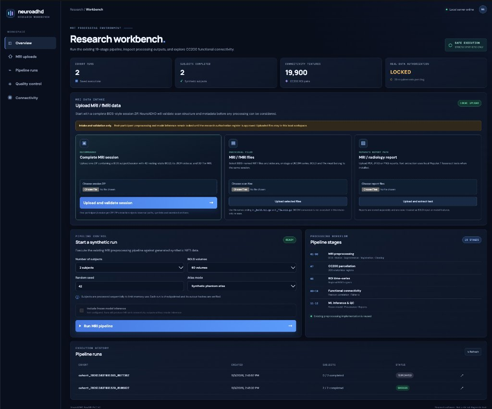
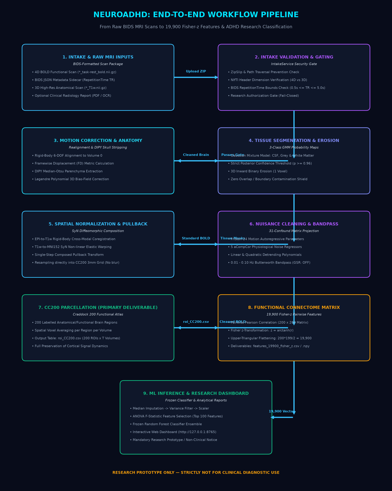
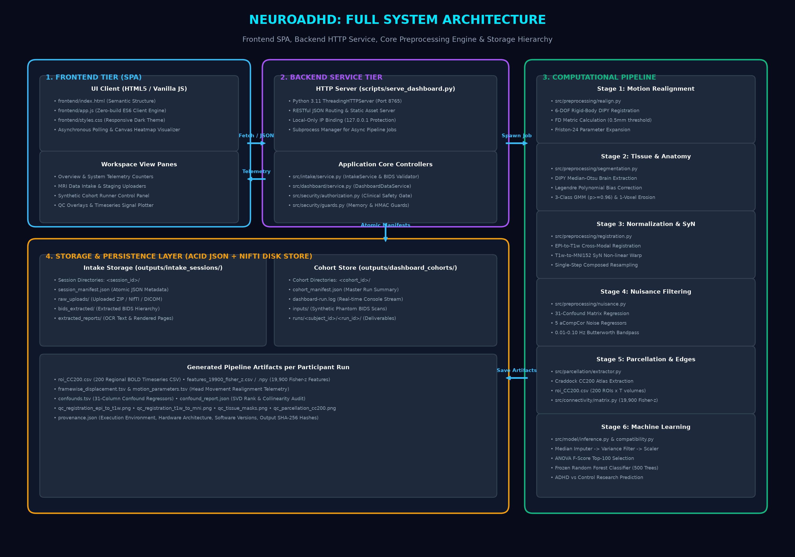

STEP 1: Project Introduction
1.1 What This Project Does
The NeuroADHD project is an automated neuroimaging preprocessing and feature extraction system. It ingests raw brain MRI scans (specifically 4D resting-state functional MRI scans and 3D anatomical structural scans), performs standardized medical image cleaning and spatial alignment, extracts regional neural signals from 200 distinct brain regions using the Craddock CC200 atlas, calculates pairwise functional connectivity (the strength of communication between brain regions), and feeds these connectivity values into a trained machine-learning model to predict ADHD-versus-neurotypical brain patterns for research.
1.2 Why This Project is Needed & The Problem it Solves
In historical research, machine-learning models were trained on pre-extracted tables of regional brain signals. However, raw MRI data coming directly from a hospital scanner (e.g., Siemens, GE, or Philips) cannot be fed into a machine-learning algorithm directly:
- Head Motion: Patients naturally move their heads by fractions of a millimeter inside the scanner, corrupting functional measurements.
- Anatomical Variation: Every human brain has a unique shape and size; brains must be mapped onto a standardized coordinate grid (the MNI152 template) so that region #45 in Patient A corresponds to region #45 in Patient B.
- Physiological Noise: Heartbeats, breathing, and scanner magnetic field drifts create false signals that can drown out genuine neural activity.
The Solution: NeuroADHD provides an automated, standardized, reproducible 22-stage pipeline that handles raw scan intake, raw-BOLD motion estimation, metadata-driven slice-timing correction (DEC-STC-01), B0 susceptibility distortion correction (DEC-SDC-02), skull stripping, tissue segmentation, single-step composed spatial normalization, and nuisance regression, outputting standardized roi_CC200.csv tables and 19,900 Fisher-$z$ connectivity features without requiring manual neuroimaging software intervention.
1.3 Who Will Use It?
- Neuroscience Researchers: Investigating functional brain connectivity alterations in neurodevelopmental conditions.
- Biomedical Engineers & Data Scientists: Developing and validating computer-aided diagnostic algorithms.
- Clinical Research Investigators: Evaluating prospective MRI cohorts in controlled academic studies.
STRICTLY_SYNTHETIC_ONLY mode.
1.4 Plain-English Glossary of Technical Terms
| Term | Simple Plain-English Definition |
|---|---|
| fMRI (Functional MRI) | An MRI technique that measures tiny blood-oxygen changes in the brain over time, showing which brain areas are active while a person rests. |
| BOLD Signal | "Blood-Oxygen-Level-Dependent" signal. When neurons become active, they consume oxygen; BOLD measures this oxygen change. |
| T1-weighted MRI (T1w) | A high-resolution, static 3D anatomical photograph of the brain's physical structure, showing sharp boundaries between grey and white matter. |
| Voxel | A "3D pixel" inside an MRI scan. Just like a digital photo is made of 2D pixels, a 3D brain scan is made of millions of tiny cubes called voxels. |
| BIDS | "Brain Imaging Data Structure" — a globally standardized folder and naming format used by neuroscientists to organize MRI files consistently. |
| CC200 Atlas | The "Craddock 200" brain map. It partitions the human cortex into exactly 200 functionally distinct regions (labeled 1 to 200). |
| Parcellation | The process of dividing the brain into distinct parcels or regions and averaging the signal of all voxels inside each parcel. |
| Functional Connectivity | The mathematical correlation between two brain regions over time. If Region A and Region B fluctuate together, they are functionally connected. |
| Fisher z-Transformation | A mathematical formula ($z = arctanh(r)$) that converts correlation values into normally distributed values suitable for machine learning. |
| Frontend | The user interface (webpage) you see in your browser with buttons, tables, and graphs. |
| Backend | The Python server running in the background that receives files, executes mathematics, and returns results. |
| API | "Application Programming Interface" — the standardized communication bridge between the frontend and the backend. |
http://127.0.0.1:8765.outputs/ folder on your local computer.STEP 2: Initial Setup (Starting From Zero)
This section assumes you have just cloned or opened the project folder for the very first time on a fresh computer. Follow these steps sequentially in your system Terminal.
2.1 Required Software
- Operating System: macOS (Apple Silicon or Intel) or Linux (Ubuntu 22.04+ / Debian / Fedora).
- Python 3.11: Python 3.10+ or 3.11+ must be installed. (Verify with
python3 --version). - Terminal: macOS Terminal, iTerm2, or Linux Bash/Zsh.
- Web Browser: Google Chrome, Mozilla Firefox, Apple Safari, or Microsoft Edge.
2.2 Step-by-Step Installation Commands
Command 1: Navigate to the Project Root
cd "<your-project-folder>"
Where to execute: In your operating system Terminal.
What it does: Changes your active directory into the project root folder.
Successful execution looks like: Your terminal prompt displays the folder path without returning any error.
Command 2: Activate the Virtual Environment
source .venv/bin/activate
Where to execute: In the project root.
What it does: Activates the isolated Python virtual environment containing all pre-installed scientific packages (DIPY, Nilearn, NiBabel, Scikit-Learn, SciPy, NumPy, Pandas, Matplotlib).
Successful execution looks like: Your command line prompt is prefixed with (.venv).
Command 3: Install Pinned Dependencies (Fresh Setup Only)
If you are setting up on a completely new machine where .venv does not exist, create it and install pinned packages:
python3 -m venv .venv
source .venv/bin/activate
pip install -r requirements-lock.txt
What it does: Installs the exact locked versions of the 53 required scientific libraries (from requirements-lock.txt) so that there are zero version discrepancies.
Successful execution looks like: Successfully installed dipy-1.12.1 nibabel-5.4.2 nilearn-0.14.1 scikit-learn-1.9.1 scipy-1.17.1 numpy-2.4.6 pandas-3.0.6 ...
Command 4: Configure Mandatory Environment Variables
NeuroADHD enforces fail-closed cryptographic security to ensure synthetic session integrity:
export NEUROADHD_HMAC_KEY="neuroadhd_local_research_key_12345"
What it does: Sets the secret HMAC authentication key used to compute and verify SHA-256 integrity tokens for synthetic MRI sessions.
Successful execution looks like: The variable is loaded in memory silently. Verify by running echo $NEUROADHD_HMAC_KEY.
Command 5: Launch the Web Dashboard Server
PYTHONPATH=. .venv/bin/python scripts/serve_dashboard.py
What it does: Initializes the Python ThreadingHTTPServer on local port 8765, binds to 127.0.0.1, serves static frontend assets from frontend/, and establishes the REST API controllers.
Successful execution looks like:
NeuroADHD dashboard: http://127.0.0.1:8765
Mode: STRICTLY_SYNTHETIC_ONLY | Real-data authorization: FALSE.venv, export NEUROADHD_HMAC_KEY, and run scripts/serve_dashboard.py.http://127.0.0.1:8765 is online in synthetic mode.outputs/intake_sessions/.STEP 3: Understanding the Interface
Open your web browser and go to http://127.0.0.1:8765. You are greeted by the dark navy NeuroADHD Research Workbench.

3.1 Breakdown of Interface Sections
1. Left Navigation Sidebar
- Overview (◫): High-level system dashboard displaying telemetry counters, security state, upload boxes, and pipeline trigger.
- MRI uploads (⇧): Dedicated intake monitoring view for reviewing uploaded ZIP archives, NIfTI files, and extracted radiology report text.
- Pipeline runs (⌁): Cohort execution history table showing past synthetic runs, timestamps, completed subjects, and status badges.
- Quality control (⌗): High-resolution diagnostic view displaying orthographic slice overlays for coregistration, normalization, and tissue masks.
- Connectivity (◉): Interactive $200 \times 200$ functional correlation matrix heatmap with hover coordinates and regional BOLD timeseries plots.
2. Top Metric Cards
- Cohort Runs: Total number of synthetic cohort batches executed and stored on disk.
- Subjects Completed: Total synthetic participant sessions that have successfully finished all 22 pipeline stages.
- Connectivity Features: Exactly 19,900 unique pairwise Fisher-$z$ correlation features extracted per subject.
- Real Data Authorization: Displays LOCKED (23 requirements pending), confirming fail-closed clinical protection.
3. MRI Data Intake (3 Upload Cards)
Explained in complete detail in Step 4 below. Provides distinct paths for Complete Sessions (ZIP), Individual NIfTI/DICOM files, and Radiology Reports (PDF/OCR).
4. Pipeline Control Panel
- Number of subjects: Dropdown to simulate 1 to 4 synthetic subjects in a batch (default: 2 subjects).
- BOLD volumes: Number of temporal scans per subject (default: 60 volumes, $TR=2.0\text{ s}$).
- Random seed: Deterministic pseudorandom generator seed (default: 42).
- Atlas mode: Selects between
Synthetic phantom atlas(fast validation) orCanonical CC200 atlas(authentic anatomical coordinates). - Include frozen model inference: Checkbox to route extracted features through the trained Random Forest classifier.
- Run MRI pipeline →: Primary blue action button to spawn the pipeline background runner.
5. Execution History Table
Lists every cohort by unique ID (e.g. cohort_20261103T091529_010582Z), creation date, completion ratio (2 / 2 completed), and color-coded status pills:
SUCCESS, RUNNING, or TERMINATED.
Clicking any row loads the detailed subject telemetry and QC images into the bottom panels.
http://127.0.0.1:8765 in your browser to view the interactive workbench.frontend/index.html, app.js, and styles.css.STEP 4: File Upload – Where and How?
This section details how to upload neuroimaging data into the system, the strict validation rules enforced, and where files are physically saved on disk.
4.1 Comprehensive File Upload Specification Table
| Upload Path | Accepted Format | Upload Location | Validation Performed | Disk Storage Location |
|---|---|---|---|---|
| 1. Complete MRI Session (Recommended) | Single .zip file containing BIDS structure |
Dashboard Overview → Card 1: "Complete MRI session" | ZipSlip traversal check, symlink rejection, 4D BOLD dimensions, $T_R$ range check ($0.5\text{s} \le T_R \le 5.0\text{s}$), 3D T1w presence. | outputs/intake_sessions/<session_id>/uploads/<file>.zipExtracted to: outputs/intake_sessions/<session_id>/data/ |
| 2. Individual MRI / fMRI Files | .nii.gz, .nii, .json, or .dcm |
Dashboard Overview → Card 2: "MRI / fMRI files" | File naming pattern (*_bold.nii.gz, *_T1w.nii.gz), NiBabel header integrity, JSON sidecar syntax. |
outputs/intake_sessions/<session_id>/uploads/ |
| 3. Radiology / Medical Report | .pdf, .png, .jpg, .jpeg |
Dashboard Overview → Card 3: "MRI / radiology report" | MIME-type check, maximum file size limit (50 MB), PDF structure validation, OCR engine detection (Poppler / Tesseract). | outputs/intake_sessions/<session_id>/uploads/Extracted text: outputs/intake_sessions/<session_id>/reports/report_text.txt |
4.2 Ideal BIDS Archive Structure (Inside the ZIP)
When preparing a complete session ZIP file for upload, format the internal directory structure according to the official BIDS standard:
sub-01_ses-1.zip
└── sub-01/
└── ses-1/
├── anat/
│ └── sub-01_ses-1_T1w.nii.gz # High-resolution 3D structural scan
└── func/
├── sub-01_ses-1_task-rest_bold.json # Metadata sidecar containing "RepetitionTime": 2.0
└── sub-01_ses-1_task-rest_bold.nii.gz # 4D functional timeseries (T >= 50 volumes)4.3 Example Walkthrough: Uploading a Session
- Open
http://127.0.0.1:8765and find Card 1: Complete MRI session. - Click Choose File and select your prepared BIDS archive (e.g.
my_patient_session.zip). - Click the blue button: Upload and validate session →.
- The button changes to Uploading... while file bytes stream directly to disk without consuming server RAM.
- Upon receipt, the backend extracts the archive, inspects NIfTI dimensions, checks the JSON sidecar, and returns a JSON receipt.
- The card updates with a green status message:
Validation Successful: BOLD (64x64x34x60, TR=2.0s) and T1w (256x256x176) verified. Session staged under outputs/intake_sessions/<session_id>.
4.4 Automated DICOM-to-BIDS Ingestion (with dcm2niix)
For environments where neuroimaging data arrives directly from clinical scanner consoles in Digital Imaging and Communications in Medicine (DICOM) format, NeuroADHD includes an integrated DICOM-to-BIDS intake engine powered by Chris Rorden's dcm2niix.
DICOM-to-BIDS conversion is strictly gated by the research authorization register. Before invoking dcm2niix or writing any NIfTI/JSON files, convert_dicom_to_bids executes ResearchAuthorizationGate.verify_dataset_authorization(...) (configs/research_authorization_register.json) using the exact register dataset_id and operation "dicom_conversion", failing closed unless an unexpired, HMAC-SHA256 signed APPROVED record is present (sub-01 is currently PENDING and blocked). Inspect-only header listing (inspect_dicom via dcm2niix -n -1 / -n -2, writing no NIfTI images) remains allowed. Downstream computational preprocessing, feature extraction, and frozen model inference remain separately locked.
The Two-Phase DICOM Processing Protocol:
-
Series Inspection (
POST /api/intake/sessions/<session_id>/inspect_dicom): When DICOM files or directories are staged within an intake session, the engine invokes inspect-only header listing (dcm2niix -n -1/-n -2) to rapidly catalog all imaging series without writing NIfTI volume files (inspect-only remains allowed). It parses metadata fields (includingSeriesNumber,SeriesDescription,ProtocolName,RepetitionTime,EchoTime, and volume counts) and classifies candidate scans into 3D T1-weighted structural anatomy and 4D BOLD functional timeseries. If multiple BOLD candidates or ambiguous series are detected, the API returns a structured candidate list for user selection. -
Deterministic BIDS Normalization (
POST /api/intake/sessions/<session_id>/convert_dicom): Upon user confirmation of series mappings, the backend first enforces the fail-closed dataset authorization check for exactdataset_idand"dicom_conversion"permission (returning an authorization block error if not approved and validly signed). Only when authorized doesdcm2niixexecute conversion using internal flags for lossless gzip compression (-z y) and BIDS sidecar generation (-b y -ba y). The generated files are placed into canonical BIDS hierarchy (sub-<participant>/ses-<session>/anat/andsub-<participant>/ses-<session>/func/) with POSIX permissions0600, verified for non-empty file size and valid repetition time ($T_R \ge 0.5\text{ s}$), and bundled into a validated session archive ready for staging.
http://127.0.0.1:8765.intake_manifest.json.outputs/intake_sessions/<session_id>/.STEP 5: What Happens Immediately After Upload? (Internal Workflow Sequence)
This section demystifies the exact 13-step technical chain reaction that occurs behind the scenes from the microsecond you click Upload until the results appear on screen.
5.1 The 13-Step Technical Sequence
-
User Selects File: You choose
session.zipin your browser using the HTML file input element. -
Frontend Pre-flight:
frontend/app.jschecks that a file is actually selected and validates that the file extension is.zip,.nii,.nii.gz,.json, or.pdf. -
Session Initialization Request: The frontend makes an HTTP
POST /api/intake/sessionsrequest with payload{"kind": "scan"}. -
Backend Session Allocation:
src/intake/service.py:create_session()generates a secure random session ID in formatintake_<32 hex>(e.g.,intake_3f2a89c1...) and creates directoryoutputs/intake_sessions/<session_id>/with subdirectoriesuploads/,data/, andreports/. -
Streaming File Upload: The frontend streams raw binary file chunks (using a 1 MiB chunk size) using
POST /api/intake/sessions/<session_id>/fileswith custom headerX-Upload-Filename: session.zip. -
Memory-Safe Disk Streaming: In
scripts/serve_dashboard.py, the server writes incoming bytes directly intooutputs/intake_sessions/<session_id>/uploads/session.zipusing a bounded stream buffer, preventing server RAM exhaustion. - Cryptographic Hash Verification: As the file is written, the server computes the cryptographic SHA-256 checksum and saves it into the session record.
-
Safe Archive Extraction: At upload time,
_extract_archive()inspects the archive for ZipSlip directory traversal attacks (ensuring no file extracts outside the target directory) and unpacks scan contents safely intooutputs/intake_sessions/<session_id>/data/. -
Neuroimaging Header Inspection & Separate Validation: The frontend calls
POST /api/intake/sessions/<session_id>/validate, which invokesnibabel.load()to parse the NIfTI headers:- Verifies the functional scan has 4 dimensions $(X, Y, Z, T)$ with $T \ge 50$ volumes.
- Verifies the structural scan has 3 dimensions $(X, Y, Z)$ (3D anatomical check).
- Parses the companion JSON sidecar to confirm
RepetitionTimeis within $0.5\text{s} \le T_R \le 5.0\text{s}$.
-
Session Manifest Persistence: An atomic JSON document (
intake_manifest.json) is written via a temporary file and atomic rename, recording all extracted file paths, dimensions, and checksums. -
Safety Gate Enforcement: The backend checks
src/validation/authorization_gate.py:ResearchAuthorizationGate. Because clinical research credentials are not yet verified, the backend tags the session asVALIDATED_WAITING_FOR_RESEARCH_AUTHORIZATIONand locks real-scan execution. The pipeline itself runs strictly on generated synthetic phantoms. -
Backend JSON Response: The server returns HTTP
200 OKwith a JSON summary of the validated scans, volume count, and storage path. -
Frontend DOM Update:
frontend/app.jsrenders a green confirmation box detailing the validated scans and updates the MRI uploads monitoring tab.
outputs/intake_sessions/<session_id>/intake_manifest.json.STEP 6: Complete 22-Stage Processing Pipeline
When a processing run is triggered (either automatically on synthetic data or manually via scripts/run_poc_v2.py), the computational engine executes exactly 22 chronological stages. Crucially, rigid motion parameters are estimated on raw uncorrected BOLD (Stage 2) prior to slice-timing correction (Stage 3) and susceptibility distortion estimation (Stage 4), and all spatial transforms (rigid motion, optional B0 SDC displacement, EPI-to-T1w coregistration, T1w-to-MNI affine, and SyN warp) are composed in Stage 13 into a single spatial interpolation directly from the unresampled Stage 3 slice-time-corrected BOLD series.
Stage 1: BIDS Input & Sidecar Metadata Validation
- Input:
*_task-rest_bold.jsonsidecar, 4D BOLD NIfTI, 3D T1w NIfTI, and CC200 atlas file. - Processing: Validates $T_R$ within bounds, resting-state task name, minimum $T \ge 50$ volumes, optional volume censoring indices, and canonical/phantom CC200 atlas SHA-256 verification.
- Output: Verified metadata dictionary and immutable input SHA-256 hashes (verified again after Stages 2–4).
- Next Stage →: Passes raw unresampled BOLD and validated metadata to Stage 2.
Stage 2: 3D Rigid Motion Parameter Estimation (Raw Uncorrected BOLD)
- Input: Raw, uncorrected 4D BOLD volume series $(X \times Y \times Z \times T)$.
- Processing: Uses
src/preprocessing/motion.py:estimate_motion_parameters()(DIPY 6-DOF rigid alignment aligning volumes $t=1 \dots T-1$ to reference Volume 0). Computes Framewise Displacement ($FD$) using Power et al. (2012) with $r = 50\text{ mm}$ radius: $$FD_t = |\Delta d_{x,t}| + |\Delta d_{y,t}| + |\Delta d_{z,t}| + 50 \cdot (|\Delta \alpha_t| + |\Delta \beta_t| + |\Delta \gamma_t|)$$ Motion estimation is decoupled from spatial resampling so it is never biased by temporal slice-timing interpolation. - Output:
rigid_motion_transforms(in memory for Stages 5 & 13),motion_parameters.tsv(6 cols), andframewise_displacement.tsv(1 col). - Next Stage →: Original raw BOLD continues unmodified to Stage 3.
Stage 3: Metadata-Driven Slice-Timing Correction (DEC-STC-01)
- Input: Raw 4D BOLD on original slice geometry and BIDS
SliceTiming/SliceEncodingDirectionmetadata (plus NIfTI headerdim_infoslice_dim). - Processing: Executed via
src/preprocessing/slice_timing.py:write_slice_timing_derivative(). Shifts each slice temporally toreference_time(default $T_R/2$, logged as+TR/2StartTimetemporal origin shift) using odd-point-reflected SciPy $C^2$ cubic spline interpolation (4-TR reflection padding,extrapolate=False). Never invents timings from $T_R$; respects explicitSliceEncodingDirection(i, i-, j, j-, k, k-) validated against NIfTIslice_dim, falling back strictly toslice_dim(or skipping if unknown) without assuming axisk. - Default Skip vs. Strict Mode: By default, missing
SliceTimingor an undetermined slice axis logs a warning and emits aSKIPPED_*status with a provenance flag while preserving raw timings. With--strict-slice-timing, missing timings fail closed. - Output:
derivatives/*_desc-stc_bold.nii.gz,derivatives/*_desc-stc_bold.json, andderivatives/*_desc-stc_report.json(or skip report JSON). - Next Stage →: Passes STC BOLD (or unmodified BOLD if skipped) to Stage 4.
Stage 4: B0 Susceptibility Distortion Correction (DEC-SDC-02)
- Input: STC BOLD metadata/geometry and BIDS
fmap/directory (if present). - Processing: Executed via
src/preprocessing/susceptibility_distortion.py:run_susceptibility_distortion_correction(). Discovers associated fieldmaps using BIDS priority (B0FieldSource/B0FieldIdentifieroverIntendedFor; rejects conflicting ambiguity), validates BIDS voxel-axisPhaseEncodingDirection(i, i-, j, j-, k, k-; requires at least one pair of opposite phase-encoding directions for TOPUP/PEPOLAR pairs, rejecting same-direction pairs even with distinct readout times) andTotalReadoutTime(orEffectiveEchoSpacing * (ReconMatrixPE - 1)), converts calibrated directHz/rad/sfieldmaps into PE pullback displacementdisplacement_vox, checks diffeomorphic invertibility ($J(v) = 1 + \partial u_a / \partial v_a > 0$), and enforces a post-correction QC rejection gate (ifncc_after < ncc_beforeagainst reference, the warp is rejected with statusREJECTED_QC_DEGRADEDand pre-correction BOLD is preserved). - Default Skip vs. Strict Mode & Tool Limitation: By default, missing associated fieldmaps, missing
PhaseEncodingDirection, missingTotalReadoutTime, missing external FSL tools, or QC-degraded alignment logs aSKIPPED_*orREJECTED_QC_DEGRADEDflag (corrected = false) without inventing synthetic warps. With--strict-sdc, any skip or QC degradation fails closed (raisesSDCError). Limitation: only calibrated directHz/rad/sfieldmaps are applied; FSLtopup,prelude, andfuguewere never run. - Output: Optional
displacement_voxpullback field andderivatives/*_desc-sdc_report.json(plus fieldmap/displacement/QC derivatives when applied, annotated with standardizedQC_METRIC_INTERPRETATION). - Next Stage →: Passes Stage 2 motion transforms, Stage 3 STC BOLD, and optional Stage 4 SDC displacement to Stage 5 and Stage 13.
Stage 5: Motion Transform (+ Optional SDC) Application
- Input: Stage 3 STC BOLD, Stage 2
rigid_motion_transforms, and optional Stage 4displacement_vox. - Processing: Calls
apply_motion_transforms(..., sdc_displacement=...)to build an aligned (and unwarped when SDC is active) native-space 4D temporary series solely for computing a sharp Stage 6 functional reference for coregistration. - Output: Native-aligned temporary BOLD (released immediately after Stage 6; never consumed for final timeseries extraction).
- Next Stage →: Passed to Stage 6.
Stage 6: 3D Functional Reference Generation
- Input: Stage 5 motion-aligned (+ optionally unwarped) 4D native BOLD series.
- Processing: Computes the voxel-wise temporal mean and brain mask via
generate_functional_reference()to produce a high-contrast 3D EPI reference image. - Output: 3D EPI reference volume and EPI brain mask.
- Next Stage →: Used as moving target for cross-modal coregistration in Stage 11.
Stage 7: Anatomical Brain Extraction
- Input: Raw 3D T1-weighted anatomical scan.
- Processing: Executes DIPY
median_otsusegmentation to strip skull and extra-cranial tissues, followed by 3D binary morphological hole-filling. - Output: Clean brain-only parenchyma mask and skull-stripped T1w volume.
- Next Stage →: Stripped anatomy passed to Stage 8.
Stage 8: Log-Polynomial Bias-Field Correction
- Input: Skull-stripped T1w volume and brain mask.
- Processing: Fits a 2nd-order 3D Legendre polynomial surface $B(x, y, z)$ to estimate low-frequency $B_1$ magnetic field inhomogeneity drift and divides intensities by the estimated field.
- Output: Intensity-normalized anatomical image with uniform tissue contrast.
- Next Stage →: Uniform anatomy passed to Stage 9.
Stage 9: Tissue Segmentation (CSF, GM, WM Probabilities)
- Input: Bias-corrected T1w anatomical volume.
- Processing: Fits a 3-component Gaussian Mixture Model (GMM) to estimate posterior probability maps for: Cerebrospinal Fluid (CSF), Cortical Grey Matter (GM), and Deep White Matter (WM).
- Output: 3 probability arrays where $\sum_{k} p(C_k | v) = 1.0$.
- Next Stage →: Probability maps passed to Stage 10.
Stage 10: Morphological Tissue Mask Erosion & Geometry Verification
- Input: CSF and White Matter posterior probability maps.
- Processing: Enforces strict confidence threshold $p \ge 0.96$ followed by 1-voxel inward 3D binary morphological erosion using a 6-connectivity structuring element and overlap verification.
- Output: Ultra-clean, non-overlapping WM and CSF masks (0 voxel overlap) preventing cortical grey-matter signal contamination in nuisance regressors.
- Next Stage →: Eroded masks passed to Stage 14.
Stage 11: EPI-to-T1w Rigid Coregistration
- Input: 3D functional reference EPI (from Stage 6) and T1w brain (from Stage 7).
- Processing: Optimizes a 6-DOF rigid transformation matrix using mutual information to align functional EPI space with subject T1w anatomy. When Stage 4 SDC was applied, also evaluates distorted vs. unwarped EPI against coregistered T1w (
correction_qc:ncc,nmi,mask_dice) and updatesderivatives/*_desc-sdc_qc.pngand*_desc-sdc_report.json. - Output: Coregistration affine matrix $R_{\text{EPI}\to\text{T1w}}$.
- Next Stage →: Combined into Stage 13 single-step pullback.
Stage 12: T1w-to-MNI SyN Nonlinear Normalization
- Input: Subject T1w anatomical brain and standard MNI152 stereotaxic template.
- Processing: Calculates a 12-DOF affine pre-alignment followed by DIPY Symmetric Normalization (SyN) diffeomorphic nonlinear warping onto MNI152 coordinates.
- Output: Affine pre-alignment $A_{\text{T1w}\to\text{MNI}}$ and nonlinear deformation field $\Phi_{\text{T1w}\to\text{MNI}}$.
- Next Stage →: Combined into Stage 13 single-step pullback.
Stage 13: Composed Single-Step Pullback Resampling into CC200 Grid
- Input: Unresampled Stage 3 STC 4D BOLD, Stage 2
rigid_motion_transforms, optional Stage 4sdc_displacement, Stage 11 $R_{\text{EPI}\to\text{T1w}}$, Stage 12 SyN map, and CC200 atlas geometry. - Processing: Composes all spatial transforms via
compose_transformations()(andcompose_sdc_transform()when SDC is active) into a single continuous coordinate pullback: $$v_{\text{vol}}(t) = A_{\text{EPI}}^{-1}\, M_{\text{ref}\to\text{vol}}(t)\, A_{\text{EPI}} \left( v_{\text{undist}} + \mathbf{u}_{\text{SDC}}(v_{\text{undist}}) \right), \quad v_{\text{undist}} = A_{\text{EPI}}^{-1} (A_{\text{T1w}\to\text{MNI}} R_{\text{EPI}\to\text{T1w}})^{-1} \Phi_{\text{SyN}}^{-1}(x_{\text{MNI}})$$ Executed in one single spatial trilinear interpolation viaresample_4d_bold()directly onto the CC200 standard grid, preventing compounded interpolation blurring. - Output: Standard-space 4D BOLD series matching CC200 shape and affine.
- Next Stage →: Standard-space BOLD passed to Stage 15 and Stage 18.
Stage 14: Tissue Mask Standard Grid Resampling
- Input: Eroded CSF and WM masks (from Stage 10) and Stage 12 SyN transformation field.
- Processing: Warps subject eroded tissue masks into the exact CC200 target grid via nearest-neighbor interpolation (
resample_mask_to_target()). - Output: Standard-space WM and CSF nuisance masks matching Stage 13 BOLD grid geometry.
- Next Stage →: Standard masks passed to Stage 15.
Stage 15: aCompCor Physiological Noise Extraction
- Input: Standard-space 4D BOLD (Stage 13) and standard-space eroded WM/CSF masks (Stage 14).
- Processing: Extracts voxel timeseries inside the eroded WM/CSF masks, standardizes to unit variance, and computes PCA to isolate the top 5 anatomical CompCor (aCompCor) physiological noise components.
- Output: Array of 5 physiological noise regressors $(T \times 5)$.
- Next Stage →: Components passed to Stage 17.
Stage 16: Friston-24 Motion Regressor Expansion
- Input: 6 rigid realignment parameters estimated on raw BOLD in Stage 2 $(R_t)$.
- Processing: Expands into the complete Friston-24 autoregressive motion model: $$[R_t, \quad R_{t-1}, \quad R_t^2, \quad R_{t-1}^2]$$
- Output: Matrix of 24 motion regressors $(T \times 24)$.
- Next Stage →: Motion regressors passed to Stage 17.
Stage 17: Confound Matrix Assembly & Collinearity Check
- Input: 24 Friston regressors + 5 aCompCor components + linear trend + quadratic trend.
- Processing: Assembles the full $T \times 31$ design matrix $X$ via
src/preprocessing/nuisance.py:build_confound_matrix(), auditing matrix rank ($31/31$) and SVD condition number. Global Signal Regression (GSR) and mean tissue regression remain explicitly OFF. - Output:
confounds.tsvandconfound_report.json. - Next Stage →: Confound matrix passed to Stage 18.
Stage 18: Simultaneous Nuisance Regression & Butterworth Bandpass
- Input: Standard-space 4D BOLD (Stage 13) and 31-column confound matrix $X$ (Stage 17).
- Processing: Executes simultaneous OLS nuisance projection and zero-phase Butterworth bandpass filtering via
nilearn.image.clean_img()(order 5) retaining resting-state frequencies 0.01 Hz – 0.10 Hz: $$Y_{\text{clean}} = \left(I - X(X^T X)^{-1}X^T\right) Y$$ - Output: Fully cleaned 4D BOLD series on the standard CC200 grid.
- Next Stage →: Cleaned functional data passed to Stage 19.
Stage 19: CC200 ROI Time Series Extraction
- Input: Cleaned 4D BOLD series, Craddock CC200 atlas (200 parcels), and optional configured censor indices.
- Processing: Computes the spatial mean BOLD signal across all voxels in parcel $i = 1 \dots 200$ for every retained volume $t$ using
src/parcellation/extractor.py:extract_cc200_timeseries(): $$s_i(t) = \frac{1}{|V_i|} \sum_{v \in V_i} \text{BOLD}(v, t)$$ When no volume censoring is configured, $T$ input volumes produce exact shape $(200, T)$ timepoints in memory androi_CC200.csvwith 200 rows × $1 + T$ columns (column 0 isnode/volume= parcel index, columns0..T-1are volumes). - Output:
roi_CC200.csv. - Next Stage →: ROI signals passed to Stage 20.
Stage 20: Pairwise Fisher-$z$ Connectivity Vector Calculation
- Input: 200 regional BOLD timeseries from Stage 19.
- Processing: Uses
src/features/connectivity.py:compute_connectivity_vector()to compute pairwise Pearson correlations $r_{i,j}$ and Fisher's $z$-transformation ($z_{i,j} = \operatorname{arctanh}(r_{i,j})$), extracting the $\frac{200 \times 199}{2} = 19,900$ strictly upper-triangular features. - Output:
features_19900_fisher_z.csvandfeatures_19900_fisher_z.npy. - Next Stage →: Features passed to Stage 21 (and optional frozen model inference).
Stage 21: Quality Control Visual Overlays
- Input: Intermediate and final registered volumes, tissue masks, and CC200 parcellation.
- Processing: Generates 4 core diagnostic PNG overlays:
qc_registration_epi_to_t1w.png: EPI contour overlaid on T1w anatomy.qc_registration_t1w_to_mni.png: MNI template contour overlaid on normalized T1w.qc_tissue_masks.png: Eroded WM and CSF tissue masks.qc_parcellation_cc200.png: CC200 parcel boundaries overlaid on mean cleaned BOLD.
derivatives/*_desc-sdc_qc.pngwhen Stage 4 SDC is applied.) - Output: 4 diagnostic PNG files in the run directory.
- Next Stage →: Passed to Stage 22.
Stage 22: Schema-Compliant Provenance JSON Generation
- Input: All outputs, Stage 2–4 metadata/reports, package versions, memory stats, and validation gates.
- Processing: Builds
provenance_dictrecordingpipeline_stages_total: 22, the full 22-itempreprocessing_orderlist,motion_estimationtiming-order flags (estimated_on_raw_uncorrected_bold,estimated_before_slice_timing,single_step_composed_resampling_with_stc_bold,single_step_composed_resampling_with_sdc),slice_timing_correctionprovenance,susceptibility_distortion_correctionprovenance, all 6validation_gates,output_artifacts, and SHA-256output_checksums; validates againstconfigs/provenance_schema.json. - Output:
provenance.json,output_manifest.json, andrun_manifest.json. - Final Result: Pipeline successfully completes.
6.2 Slice-Timing Correction (DEC-STC-01): Skip/Strict Behavior & Safeguards
Stage 3 (src/preprocessing/slice_timing.py) implements metadata-driven slice-timing correction on the original slice grid before spatial resampling:
- Strict Metadata & Axis Resolution: Requires valid
RepetitionTime($T_R$) and explicitSliceTimingarray matching the number of slices. ExplicitSliceEncodingDirection(i, i-, j, j-, k, k-) is checked against the NIfTI headerdim_infoslice_dim(conflicts fail closed). IfSliceEncodingDirectionis absent, the axis is taken from headerslice_dimwith increasing slice-index convention; if both are absent, STC never guesses'k'and skips withSKIPPED_UNKNOWN_SLICE_AXIS. - Temporal Interpolation & Boundary Handling: Default SciPy odd-point-reflected $C^2$ cubic spline (4-TR reflection padding,
extrapolate=False) shifts all slices to $T_R/2$ and recordstemporal_origin_shift_seconds(BIDSStartTime), 5-region boundary metrics, and edge-risk window metadata without trimming volumes. Double-STC (SliceTimingCorrected=True) is rejected fail-closed. - Default Skip vs. Strict CLI Mode: By default, missing
SliceTiming(or unknown slice axis) emits aSKIPPED_MISSING_METADATA/SKIPPED_UNKNOWN_SLICE_AXISstatus with a logged provenance flag rather than inventing timings from $T_R$. Passing--strict-slice-timingforces fail-closed termination whenever timing metadata is incomplete. Real-data mode must always use strict mode.
6.3 B0 Susceptibility Distortion Correction (DEC-SDC-02): Behavior & Known Limitations
Stage 4 (src/preprocessing/susceptibility_distortion.py) audits and estimates susceptibility-induced EPI distortion without ever synthesizing unvalidated warps:
| Condition / Metadata State | Default Pipeline Behavior | Strict Flag Behavior (--strict-sdc) |
|---|---|---|
No BIDS-associated fieldmap (B0FieldSource/IntendedFor absent) | Logs warning, emits SKIPPED_NO_ASSOCIATED_FIELDMAP (corrected: false) in provenance | Fails closed (execution halts) |
Missing PhaseEncodingDirection or TotalReadoutTime (without EffectiveEchoSpacing + ReconMatrixPE) | Emits SKIPPED_INSUFFICIENT_METADATA with missing fields flagged in provenance | Fails closed (MissingSDCMetadataError) |
PEPOLAR pair (*_epi) or *_phasediff when FSL topup / prelude / fugue absent | Emits SKIPPED_TOOL_UNAVAILABLE (records validated config & missing tools; zero fabricated warps) | Fails closed (execution halts) |
Same-direction PEPOLAR pairs (e.g. j and j even with distinct readout times) | Rejects fail-closed with InvalidSDCInputError; TOPUP strictly requires at least one opposite-PE pair | Fails closed (InvalidSDCInputError) |
Post-correction alignment degrades vs. reference (ncc_after < ncc_before) | Post-correction QC gate rejects warp, emits REJECTED_QC_DEGRADED (corrected: false), preserves pre-correction BOLD | Fails closed (SDCError) |
Calibrated direct fieldmap (*_fieldmap with Units = Hz or rad/s) | Validates overlap ($\ge 50\%$) and Jacobian ($J > 0$); applies unwarping via Stage 5 reference & Stage 13 composed pullback (APPLIED_DIRECT_FIELDMAP) | Applied if valid; fails closed on invalid fieldmap, ambiguous association, or Jacobian folding ($J \le 0$) |
QC Metric Interpretation Boundaries (QC_METRIC_INTERPRETATION): Quality-control reports and dashboard API endpoints surface standardized metric interpretations defining what metrics measure and what they do NOT prove: ncc (normalized cross correlation against anatomical reference), nmi (normalized mutual information), mask_dice (brain mask overlap), and min_jacobian (local volume change / folding bound). These metrics do not prove ground-truth distortion accuracy, do not prove through-plane signal dropout recovery, and do not establish clinical validity.
Output Manifest Correction Status (output_manifest.json): In addition to the 12 verified core research deliverables and their SHA-256 hashes, output_manifest.json includes an additive correction_status block explicitly tracking both slice_timing_correction and susceptibility_distortion_correction statuses, execution methods, and corrected booleans for unambiguous auditability.
- External FSL Binaries Never Run: In the verified pipeline environment, only calibrated direct
Hz/rad/sfieldmaps are applied; FSLtopup,prelude, andfuguewere never installed or executed against real FSL binaries (PEPOLAR and phase-difference paths emitSKIPPED_TOOL_UNAVAILABLEby default and are covered only via mocked/unit validation). - Real-Data Mode Must Use Strict Mode: Default skip-with-flag behavior exists so baseline synthetic phantoms without full fieldmaps or slice timings still demonstrate end-to-end execution. Any authorized real-participant execution must invoke both
--strict-slice-timingand--strict-sdcso silent correction omissions are impossible.
6.4 Step 3: Complete 22-Stage Synthetic Pipeline Validation (validate_step3_pipeline.py)
To demonstrate end-to-end scientific correctness prior to human data execution, the pipeline underwent rigorous synthetic validation using scripts/validate_step3_pipeline.py. The validation harness generates a fully BIDS-compliant synthetic participant dataset (sub-synthetic001, ses-01) with realistic 3D anatomical tissue contrasts (CSF, GM, WM, skull) and 4D BOLD timeseries ($240\text{ volumes}$, $T_R = 2.0\text{ s}$).
Key Empirical Results from the 22-Stage Synthetic Audit:
-
Ground-Truth Correlation Recovery: Known neurobiological correlation structures were injected into synthetic CC200 parcels to test whether filtering and parcellation preserve true functional connectivity:
- Positive Correlation Pair (Parcel 12 & Parcel 45): Injected $r > 0.75$; recovered Pearson $r = +0.9794$ to $+0.9818$ (measured from synthetic seed-42 runs across platforms; passes $> 0.70$ acceptance threshold).
- Negative Correlation Pair (Parcel 70 & Parcel 85): Injected $r < -0.70$; recovered Pearson $r = -0.9853$ to $-0.9864$ (measured from synthetic seed-42 runs across platforms; passes $< -0.65$ acceptance threshold).
- Independent Parcels: Background parcels exhibited near-zero cross-correlation, confirming no spurious signal bleeding across parcellation boundaries.
-
Full 19,900 Fisher-$z$ Vector Extraction: All 22 stage deliverables were generated and verified non-empty, with
roi_timeseries_shape = (200, 240)androi_csv_shape = (200, 241)(200 ROIs ×node/volume+ 240 volumes). The complete $19,900$-dimensional Fisher-$z$ connectivity vector was computed with $100\%$ finite numerical values ($\text{NaN} = 0, \text{Inf} = 0$). - Numerical Determinism & Reproducibility: Two back-to-back pipeline executions (Run 1 vs. Run 2) using identical random seeds yielded bitwise-reproducible outputs. Across all 200 CC200 ROI timeseries and all 19,900 connectivity edges, the maximum absolute difference was strictly $0.0$ ($|\text{Run 1} - \text{Run 2}| = 0.0 \le 10^{-7}$).
- Resource & Memory Bounds: Canonical-mode runtime was $\approx 84\text{–}102\text{ s}$ without SDC (well within the $600\text{ s}$ 10-minute budget), and peak RSS memory was $\approx 0.92\text{–}0.93\text{ GB}$ (far below the strict $2.50\text{ GB}$ hardware ceiling; with active $64\times 64\times 37\times 240$ direct-fieldmap SDC, runtime $\approx 305\text{ s}$ and peak RSS $\approx 1.12\text{ GB}$).
6.5 MNI152 SyN Non-Linear Registration Benchmark (validate_mni152_syn_registration.py)
Spatial normalization accuracy was evaluated in a standalone synthetic ground-truth registration benchmark using scripts/validate_mni152_syn_registration.py. The experiment applies a known, smooth nonlinear ground-truth displacement field $\Phi_{\text{GT}}$ to a standard MNI152 anatomical template ($3\text{ mm}$ isotropic, $36 \times 42 \times 36$ grid), resamples the moving anatomy, and uses DIPY's Symmetric Normalization (SyN) with cross-correlation metric (CCMetric(3)) and 12-DOF affine prealignment to recover the transformation.
Evaluation Methodology via Complete Transformation Chain:
Landmark displacement evaluation uses DIPY's complete composed transformation chain (syn_map.transform_points), integrating affine prealignment and diffeomorphic forward/backward displacement fields rather than simple displacement addition. Expected deformed landmarks are determined via fixed-point root inversion $y^* + u(y^*) = x_{\text{target}}$.
| Metric Category | Pre-Registration (Deformed) | Post-Registration (SyN Estimated) | Improvement / Status |
|---|---|---|---|
| Mean Target Registration Error (TRE) | $3.1022\text{ mm}$ ($1.034\text{ vox}$) | $1.0624\text{ mm}$ ($0.3541\text{ vox}$) | 65.8% error reduction |
| Median TRE | $3.2183\text{ mm}$ ($1.073\text{ vox}$) | $0.9620\text{ mm}$ ($0.3207\text{ vox}$) | 70.1% error reduction |
| Maximum Landmark TRE | $3.5238\text{ mm}$ ($1.175\text{ vox}$) | $1.9090\text{ mm}$ ($0.6363\text{ vox}$) | Sub-voxel across all 10/10 landmarks |
| Sub-Voxel Accuracy Rate | 0 / 10 landmarks ($0\%$) | 10 / 10 landmarks ($100\%$) | All landmarks < 1.0 voxel ($3\text{ mm}$) |
| Whole-Brain Volume Dice | 0.9449 | 0.9920 | +0.0471 overlap improvement |
| Ventricles Overlap Dice | 0.9830 | 0.9991 | Near-perfect anatomical overlap |
| Intensity Pearson Correlation ($r$) | 0.9726 | 0.9991 | Image correlation restored |
| Voxel Intensity RMSE | 10.3037 | 1.9223 | 81.3% reduction in residual error |
| 200-Parcel Atlas Alignment (Mean Dice) | 0.6363 | 0.7562 | +0.1199 alignment gain across 200 parcels |
| Jacobian Determinants ($\det(J)$) | N/A | $\text{Mean } 0.9108 \pm 0.1634$ $\text{Range: } [0.4854, 1.4145]$ |
0 non-positive voxels (0.0% folding) Diffeomorphic topology strictly preserved |
Results are from a synthetic phantom only, not real human MRI data. The spatial accuracy metrics reported above (including mean TRE of $1.0624\text{ mm}$ and parcel Dice of $0.7562$) were obtained using a mathematically simulated digital phantom subjected to smooth, known synthetic deformations (evaluated from a synthetic seed-42 run; values vary slightly by platform). Real participant anatomical data exhibits complex inter-subject morphological variability, gyrification patterns, skull thickness variations, and pathological tissue distortions that were not present in this synthetic experiment. These results demonstrate software execution and mathematical correctness of the SyN transformation chain, but do NOT prove clinical accuracy on real patient scans. Real-data processing remains strictly locked behind the research authorization register.
--strict-slice-timing and --strict-sdc in real-data mode).scripts/run_poc_v2.py.DEC-STC-01), B0 susceptibility distortion correction (DEC-SDC-02), skull stripping, SyN registration, single-step composed resampling, nuisance cleaning, and CC200 parcellation.roi_CC200.csv, 19,900 Fisher-$z$ features, 4 QC images, motion tables, derivatives/ STC/SDC reports, and provenance records.outputs/<run_directory>/sub-<id>/run_<timestamp>/.STEP 7: Understanding Generated Outputs (Deliverable Catalog)
Every successful execution produces a standardized set of core deliverables (12 core files plus optional model_prediction.json and Stage 3–4 files in derivatives/) stored in the participant's run directory:
outputs/<cohort_id>/runs/sub-<subject_id>/run_<timestamp>/.
The table below explains what each file contains, why it exists, which code function creates it, and how you can inspect or download it.
7.1 Comprehensive Output Artifact Catalog
| File Name | Format | Contents & Purpose | Generating Source Function | Access & Download Method |
|---|---|---|---|---|
| roi_CC200.csv | CSV | Main Project Output: Cleaned BOLD timeseries for all 200 Craddock CC200 regions (200 rows × 60 volume columns + 1 node/volume label column = 61 total CSV columns). |
src/parcellation/extractor.py: |
Download directly from disk or fetch via API: /api/runs/<c_id>/subjects/<s_id>/artifact/roi_CC200.csv |
| features_19900_fisher_z.csv features_19900_fisher_z.npy |
CSV / NumPy | 19,900 Fisher-$z$ transformed pairwise Pearson correlations representing the subject's whole-brain functional connectome vector. | src/features/connectivity.py: |
Direct disk access or view interactively in the dashboard Connectivity tab. |
| motion_parameters.tsv | TSV | 6 estimated rigid head movement trajectories (trans_x, trans_y, trans_z in mm; rot_x, rot_y, rot_z in degrees) estimated on raw uncorrected BOLD prior to STC/SDC. | src/preprocessing/motion.py: |
Inspected in text editor or loaded via Pandas: pd.read_csv('motion_parameters.tsv', sep='\t') |
| framewise_displacement.tsv | TSV | Instantaneous volume-to-volume head displacement (in mm). Values exceeding 0.50 mm are counted and logged as motion outliers without volume removal (no scrubbing). | src/preprocessing/motion.py: |
Viewed via API or visualized in dashboard Quality Control plots. |
| confounds.tsv | TSV | 31 nuisance confound regressors: 24 Friston motion parameters, 5 aCompCor anatomical noise components, and linear/quadratic trends. | src/preprocessing/nuisance.py: |
Audited via companion confound_report.json for collinearity and condition number. |
| qc_parcellation_cc200.png | PNG | Multi-plane orthographic visualization displaying all 200 CC200 parcel boundaries overlaid on the standard BOLD volume. | src/preprocessing/qc.py: |
Displayed automatically in the dashboard Quality control gallery. |
| qc_registration_t1w_to_mni.png qc_registration_epi_to_t1w.png |
PNG | Red boundary contours demonstrating spatial alignment between functional EPI, anatomical T1w, and standard MNI152 template space. | src/preprocessing/qc.py: |
Viewable directly in the web browser on the dashboard Quality Control panel. |
| qc_tissue_masks.png | PNG | Orthographic visualization showing the eroded, non-overlapping CSF (blue), Grey Matter (purple), and White Matter (cyan) masks. | src/preprocessing/qc.py: |
Diagnostic visual used to verify zero tissue boundary contamination. |
| provenance.json | JSON | Audit manifest recording pipeline_stages_total: 22, the 22-item preprocessing_order, raw-BOLD motion_estimation order flags, slice_timing_correction, susceptibility_distortion_correction, system environment, package versions, and output SHA-256 hashes. |
scripts/run_poc_v2.py: |
Validated against configs/provenance_schema.json to ensure scientific reproducibility. |
| derivatives/*_desc-stc_* derivatives/*_desc-sdc_* |
NIfTI / JSON / PNG | Stage 3 STC derivative & report JSON (*_desc-stc_bold.*, *_desc-stc_report.json) and Stage 4 SDC report/fieldmap/displacement/QC overlay (*_desc-sdc_*), preserving skip/strict provenance flags cleanly. |
src/preprocessing/slice_timing.py |
Inspected in derivatives/ or summarized via dashboard telemetry. |
outputs/dashboard_cohorts/<cohort_id>/runs/...roi_CC200.csv into downstream machine learning pipelines or analyze the 19,900 Fisher-$z$ features.output_manifest.json, run_manifest.json, optional model_prediction.json, and derivatives/ STC/SDC reports).STEP 8: Frontend and Backend Communication (API Reference)
The application utilizes a RESTful JSON HTTP architecture implemented in scripts/serve_dashboard.py. The frontend (frontend/app.js) communicates with the backend via native asynchronous JavaScript fetch() calls.
8.1 REST API Endpoint Reference
| Method | Endpoint Route | Request Parameters / Body | Response Format | Description |
|---|---|---|---|---|
GET |
/api/health |
None | JSON: {status, execution_policy, ...} |
Returns system operational state, safety gate status, and RAM memory budget. |
GET |
/api/runs |
None | JSON: {"runs": [{cohort_id, status, ...}]} |
Returns all historical cohort runs and their current statuses. |
POST |
/api/runs |
{"n_subjects": 2, "t_vol": 60, "seed": 42, "atlas_mode": "canonical"} |
JSON: {cohort_id, status: "STARTING"} |
Triggers asynchronous background pipeline execution for the requested cohort. |
GET |
/api/runs/<c_id> |
None | JSON: {cohort_id, status, subjects: [...]} |
Returns detailed subject execution states and manifest metadata for a cohort. |
GET |
/api/runs/<c_id>/subjects/<s_id> |
None | JSON: {subject_id, artifacts, ...} |
Returns individual subject artifacts, peak RSS memory, and runtime metrics. |
GET |
/api/runs/<c_id>/subjects/<s_id>/connectivity |
None | JSON: {matrix_200x200, ...} |
Downsamples and returns the $200 \times 200$ Fisher-$z$ connectivity matrix for canvas rendering. |
GET |
/api/runs/<c_id>/subjects/<s_id>/timeseries?roi=1 |
Query param: roi (1 to 200) |
JSON: {roi, values: [...]} |
Returns the cleaned BOLD timeseries signal across all timepoints for a single ROI. |
GET |
/api/runs/<c_id>/subjects/<s_id>/artifact/<filename> |
Filename in URL path | Raw image / text bytes with MIME type | Streams diagnostic PNGs (image/png) or CSV files directly to the browser. |
GET |
/api/runs/<c_id>/process |
None | JSON: {status, exit_code, started_utc, finished_utc} (pid is intentionally omitted for safety/container isolation) |
Monitors background subprocess execution status and completion timestamps. |
GET |
/api/runs/<c_id>/log |
None | JSON: {available: bool, text: "..."} |
Streams the bounded live console log (up to 16 KB) for real-time progress monitoring in the UI. |
GET |
/api/intake/sessions |
None | JSON: {sessions: [...]} |
Lists all staged upload intake sessions with their validation status and file manifests. |
GET |
/api/intake/sessions/<s_id> |
None | JSON: {session_id, status, created_utc, files: [...], validation: {...}} |
Returns detailed intake session metadata, validation results, and staged file paths. |
GET |
/api/intake/sessions/<s_id>/artifacts/<filename> |
Filename in URL path | Plain text / JSON stream | Streams extracted report artifacts (e.g. OCR text outputs from medical report extraction). |
POST |
/api/intake/sessions |
{"kind": "scan"} or {"kind": "report"} |
JSON: {session_id: "intake_<32_hex>", status: "INITIALIZED"} |
Allocates a new upload staging session folder under outputs/intake_sessions/. |
POST |
/api/intake/sessions/<s_id>/files |
Raw file bytes; Header: X-Upload-Filename |
JSON: {filename, bytes_written, sha256} |
Streams raw upload bytes directly to disk in 1 MiB chunks with safe extraction into uploads/, data/, or reports/. |
POST |
/api/intake/sessions/<s_id>/validate |
None | JSON: {status: "VALIDATED_WAITING_FOR_RESEARCH_AUTHORIZATION", ...} |
Performs NIfTI dimensional checks (4D BOLD, 3D T1w), TR validation, and writes intake_manifest.json. |
POST |
/api/intake/sessions/<s_id>/process-reports |
None | JSON: {extracted_text: "...", pages: 1} |
Executes Poppler/Tesseract OCR text extraction on uploaded medical reports. |
GET |
/api/authorization |
None | JSON: {badge: "REAL DATA PROCESSING LOCKED", dataset_id: "sub-01", dataset_authorization_status: "PENDING", signature_status, blockers: [...]} |
Queries the fail-closed research authorization gate. Evaluates the dataset_authorizations table and 10 canonical fields, returning active blockers and locking real participant processing. |
GET |
/api/pipeline/verification |
None | JSON: {status: "VERIFIED", badge: "SYNTHETIC PIPELINE VERIFIED", stages_total: 22, stages_verified: 22, stages: [...], slice_timing, susceptibility_distortion, motion_qc, registration} |
Returns the formal 22-stage pipeline verification status, confirming all 22 synthetic preprocessing stages (including raw-BOLD motion estimation, DEC-STC-01, DEC-SDC-02, SyN registration, and CC200 parcellation) and module tool availability passed validation. |
POST |
/api/intake/sessions/<s_id>/inspect_dicom |
None | JSON: {session_id, dcm2niix_available: bool, series_count, series: [...]} |
Runs fast inspect-only header listing across staged DICOM files using dcm2niix -n -1 / -n -2 (no NIfTI images written; stays allowed without conversion approval), returning classified structural and functional candidate series. |
POST |
/api/intake/sessions/<s_id>/convert_dicom |
{"t1w_series": 2, "bold_series": 3, "subject_id": "sub-01"} |
JSON: {status: "CONVERTED", converted_files: [...], validation_status} |
Converts user-selected DICOM series into standardized BIDS NIfTI and JSON sidecars using dcm2niix. Strictly gated by ResearchAuthorizationGate.verify_dataset_authorization(...): requires an unexpired, HMAC-SHA256 signed APPROVED record matching exact dataset_id with "dicom_conversion" permitted (fails closed otherwise; sub-01 is currently PENDING). |
8.2 Security & Verification Endpoints Detail
The dashboard frontend polls two primary endpoints on initialization to determine security enforcement badges and system readiness:
A. Research Authorization Status (GET /api/authorization)
Evaluates the authorization register (configs/research_authorization_register.json). Inspects root governance flags, mandatory checklists, and the dataset_authorizations table. For dataset sub-01, verifies the HMAC-SHA256 signature across all 10 canonical fields. When unapproved items or missing signatures are found, returns HTTP 200 with badge: "REAL DATA PROCESSING LOCKED" and detailed blocker strings.
B. Synthetic Pipeline Verification (GET /api/pipeline/verification)
Reads the cryptographic verification results produced by scripts/validate_step3_pipeline.py, Step 4 STC validation, and Step 5 SDC validation (plus live software probing via detect_stc_software() and detect_sdc_software()). Confirms that all 22 pipeline stages have executed cleanly with validated ground-truth correlation recovery ($r_{\text{pos}} \approx +0.98$, $r_{\text{neg}} \approx -0.985$, varying slightly by platform), bitwise reproducibility (max absolute difference $0.0$), verified CC200 atlas geometry, and honest FSL/AFNI tool availability reporting.
STEP 9: Database and File Storage Architecture
NeuroADHD employs an Atomic File-Based JSON Document Store with Cryptographic SHA-256 Provenance Manifests. Unlike traditional SQL databases that require running separate database servers (e.g. MySQL or PostgreSQL), this architecture provides 100% data portability, zero external database setup, and strict audit compliance.
9.1 Directory Hierarchy & Storage Layout
outputs/
├── intake_sessions/ # Uploaded and staged scan sessions
│ └── intake_a1b2c3d4e5f6789012345678abcdef01/ # Intake session ID (32 hex characters)
│ ├── intake_manifest.json # Atomic JSON manifest of upload
│ ├── uploads/ # Original binary uploads (.zip, .nii.gz)
│ ├── data/ # Extracted BIDS hierarchy (sub-*/ses-*)
│ └── reports/ # OCR text and extracted report images
│
└── dashboard_cohorts/ # Cohort execution outputs
└── cohort_20261103T091529_010582Z/
├── cohort_manifest.json # Master run manifest & summary
├── dashboard-run.log # Standard output / error log stream
├── inputs/ # Staged synthetic input data
│ └── sub-synthetic001/ses-1/
│ ├── anat/sub-synthetic001_ses-1_T1w.nii.gz
│ └── func/sub-synthetic001_ses-1_task-rest_bold.nii.gz
└── runs/ # Preprocessed participant deliverables
└── sub-synthetic001/
└── run_20261103_091532/
├── roi_CC200.csv # 200 ROI timeseries (200 x [1 + T])
├── features_19900_fisher_z.csv# 19,900 Fisher-z features
├── features_19900_fisher_z.npy# NumPy Fisher-z array
├── motion_parameters.tsv # 6 raw-BOLD rigid realignment params
├── framewise_displacement.tsv # FD metric
├── confounds.tsv # 31 nuisance regressors
├── confound_report.json # Rank & condition number audit
├── qc_*.png # 4 Quality control figures
├── derivatives/ # Stage 3 STC & Stage 4 SDC reports/derivatives
│ ├── *_desc-stc_bold.{nii.gz,json}
│ ├── *_desc-stc_report.json
│ └── *_desc-sdc_{fieldmap.nii.gz,displacement.nii.gz,qc.png,report.json}
├── provenance.json # 22-stage audit (incl. STC/SDC/motion_estimation)
├── output_manifest.json # SHA-256 output hashes
└── run_manifest.json # Subprocess completion status9.2 Atomic Persistence Guarantee
To ensure that power outages or process terminations never corrupt stored records, all JSON manifests are written atomically using the following pattern:
# Implemented in src/intake/service.py:_atomic_json()
temp_path = target_path.with_suffix(".tmp")
with open(temp_path, "w") as f:
json.dump(data, f, indent=2)
os.replace(temp_path, target_path) # Atomic filesystem rename9.3 Governance Register & Dataset Authorizations Architecture
Beyond operational run data, system governance is stored in a machine-readable governance ledger: configs/research_authorization_register.json. This ledger enforces ethics compliance, institutional review board (IRB) tracking, and data usage agreements before real-participant neuroimaging data can be touched.
The sub-01 Dataset Authorization Record:
The register contains a dedicated dataset_authorizations table. The baseline participant record for sub-01 is defined as follows:
- Authorization ID:
AUTH-DS-SUB01-001 - Project ID:
NeuroADHD RawMRI PoC V2 - Dataset ID:
sub-01 - Approved Purpose: Retrospective computational neuroimaging research and automated CC200 feature extraction feasibility.
- Authorization Status:
PENDING - Permitted Operations:
["dicom_conversion", "bids_validation", "preprocessing", "cc200_extraction"] - Cryptographic Signature:
null(unactivated) - Notes: Awaiting formal Institutional Ethics Committee (IEC) clearance and Data Use Agreement execution before activation.
HMAC-SHA256 Cryptographic Integrity Scheme:
To prevent tampering or unauthorized state promotion, the authorization engine (src/validation/authorization_gate.py) validates signatures using keyed HMAC-SHA256 digests. Signature calculation uses a strict canonical representation:
- The record is filtered to exactly 10 canonical fields:
approval_date,approved_purpose,authorization_id,authorization_status,authorized_personnel,dataset_id,expiry_date,institutional_approval_reference,permitted_operations, andproject_id. - The
permitted_operationslist is sorted alphabetically; all strings are trimmed of whitespace. - The dictionary is serialized to canonical JSON with sorted keys and compact separators (
","and":"). - An HMAC-SHA256 hex digest is computed using the secret key defined in
NEUROADHD_HMAC_KEY.
Fail-Closed Security Guarantee: If the authorization status is not APPROVED, if the institutional approval reference is missing, if dates are expired, or if the HMAC-SHA256 signature does not match bit-for-bit, the authorization gate completely locks real-scan execution. All computational processing remains restricted to synthetic digital phantoms.
outputs/ directory in the project repository.outputs/intake_sessions/ and outputs/dashboard_cohorts/.STEP 10: Complete User Journey (Practical Walkthrough)
This section follows a real-world scenario from start to finish: "Dr. Sarah, a computational neuroscience researcher, sits down at a new workstation to process raw resting-state fMRI data and obtain 19,900 connectivity features."
Phase 1: Starting the Platform
- Dr. Sarah opens Terminal and runs:
cd "<your-project-folder>" source .venv/bin/activate export NEUROADHD_HMAC_KEY="sarah_key_2026" PYTHONPATH=. .venv/bin/python scripts/serve_dashboard.py - The console responds with:
NeuroADHD dashboard: http://127.0.0.1:8765. - She opens Google Chrome and visits
http://127.0.0.1:8765.
Phase 2: Uploading & Staging a Subject Scan
- On the dashboard, Dr. Sarah looks at the MRI Data Intake section.
- Under Card 1 (Complete MRI session), she clicks Choose File and selects
sub-01_ses-1.zip. - She clicks Upload and validate session →.
- Within 2 seconds, a green banner appears:
Session intake_3f2a89... validated successfully. 4D BOLD (60 volumes, TR=2.0s) and 3D T1w verified. Staged under outputs/intake_sessions/intake_3f2a89.../intake_manifest.json with status VALIDATED_WAITING_FOR_RESEARCH_AUTHORIZATION. - Critical Boundary: Dr. Sarah notes that the uploaded scan is only staged and validated. Because real participant execution remains locked under the safety authorization gate, real MRI files are not processed through the pipeline.
Phase 3: Launching the Synthetic Processing Pipeline
- Dr. Sarah scrolls down to the Pipeline Control panel.
- She selects 2 subjects, 60 volumes, Seed 42, and chooses Synthetic phantom atlas (noting that the pipeline will run strictly on generated synthetic phantom subjects
sub-synthetic001andsub-synthetic002). - She clicks the blue button: Run MRI pipeline →.
- The dashboard immediately displays a flashing RUNNING badge.
- Behind the scenes, the 22-stage computational pipeline runs on the synthetic phantom: BIDS validation → raw-BOLD motion estimation → slice-timing correction (
DEC-STC-01, skipping cleanly with flag if timings absent) → B0 SDC discovery/estimation (DEC-SDC-02) → skull stripping → GMM tissue segmentation → SyN normalization → single-step composed pullback resampling → 31-confound regression → CC200 parcellation → Fisher-$z$ connectivity matrix calculation. - In under 15 seconds, the status updates to SUCCESS (2 / 2 completed).
Phase 4: Inspecting Quality Control & Connectivity
- Dr. Sarah clicks on the completed cohort row in the Pipeline runs table.
- The Quality control gallery populates with high-resolution diagnostic images:
- She inspects
qc_registration_epi_to_t1w.pngto confirm perfect rigid alignment. - She views
qc_tissue_masks.pngto ensure the CSF and White Matter masks are properly eroded. - She verifies
qc_parcellation_cc200.pngto see all 200 CC200 brain parcels mapped accurately onto standard space.
- She inspects
- She navigates to the Connectivity tab:
- An interactive $200 \times 200$ scientific heatmap renders in the browser canvas.
- She hovers over cell $(45, 112)$ to see the exact correlation ($r = 0.68$) and Fisher-$z$ score ($z = 0.829$).
- She clicks on Region 45 to view its cleaned BOLD timeseries oscillating smoothly between 0.01 Hz and 0.10 Hz.
Phase 5: Accessing and Exporting the Deliverables
- In Terminal or Finder, Dr. Sarah opens the run directory:
cd outputs/dashboard_cohorts/cohort_*/runs/sub-synthetic001/run_*/ - She copies
roi_CC200.csv(the 200 regional timeseries) andfeatures_19900_fisher_z.csv(the 19,900 feature vector) for her research publications. - Her workflow is complete without needing manual intervention or proprietary software.
STEP 11: Errors, Troubleshooting and Fixes
The table below lists every known issue, how to diagnose it from logs or terminal outputs, and the exact step-by-step remedy.
| Symptom / Error | Root Cause | How to Identify | Exact Solution |
|---|---|---|---|
Address already in use: 8765 |
A previous instance of scripts/serve_dashboard.py is still running on port 8765. |
Terminal displays OSError: [Errno 48] Address already in use upon startup. |
Find and terminate the occupying PID:lsof -ti:8765 | xargs kill -9Then relaunch the server. |
ModuleNotFoundError: No module named 'src' |
Python does not include the current working directory in its module search path. | Script fails immediately on line 1 or 2 with import failure. | Set the PYTHONPATH environment variable before python:PYTHONPATH=. .venv/bin/python ... |
RuntimeError: Mandatory HMAC integrity key not set |
Environment variable NEUROADHD_HMAC_KEY was not exported. |
Pipeline exits with fail-closed safety violation. | Export a non-empty key string in your terminal session:export NEUROADHD_HMAC_KEY="my_secret_key" |
Cohort stuck in RUNNING |
A previous process was killed via Ctrl+C before updating the manifest. | Dashboard runs table shows RUNNING indefinitely for an old date. |
Edit the manifest JSON file in outputs/dashboard_cohorts/<id>/cohort_manifest.json and set "status": "TERMINATED". |
ZipSlip Security Exception |
Uploaded ZIP archive contains relative paths (e.g. ../../etc/passwd) attempting directory traversal. |
Intake validation fails with IntakeError: Archive contains illegal traversal path. |
Re-pack the ZIP cleanly using standard BIDS relative paths (e.g. sub-01/ses-1/...) without parent directory dot-dots. |
BOLD Volumes < 50 |
Functional scan has fewer than 50 temporal timepoints ($T < 50$). | Intake validator rejects scan with BOLD series must contain at least 50 volumes. |
Provide a valid resting-state fMRI acquisition session with sufficient temporal duration ($T \ge 50$). |
RepetitionTime Out of Bounds |
JSON sidecar has $T_R < 0.5\text{s}$ or $T_R > 5.0\text{s}$ or missing parameter. | Validator rejects with RepetitionTime out of acceptable scientific range. |
Ensure sub-*_task-rest_bold.json contains a valid numeric "RepetitionTime": 2.0. |
Memory Guard Ceiling Exceeded |
Scan dimensions exceed resident set size budget (> 2.50 GB). | Pipeline fails closed with MemoryGuardError: Memory ceiling exceeded. |
Verify that high-resolution scans are cropped or that system memory limit flag is adjusted appropriately. |
STEP 12: Final System Architecture & Workflow
This chapter presents the definitive, production-verified system architecture and computational workflow for NeuroADHD. It combines high-resolution architectural diagrams with structured, interactive visual schemas that map data transformations from raw hospital BIDS scans to 19,900 Fisher-$z$ connectivity features and machine learning predictions.
12.1 End-to-End Processing Workflow
The end-to-end processing pipeline operates in 9 primary algorithmic blocks (encompassing all 22 atomic pipeline stages, including raw-BOLD motion estimation, DEC-STC-01 slice-timing correction, and DEC-SDC-02 susceptibility distortion correction). Below is the comprehensive structural workflow diagram showing the exact mathematical and computational flow:
OUT: Staged BIDS hierarchy
OUT: intake_manifest.json
DEC-STC-01 → DEC-SDC-02 fieldmap pullback (skip flags by default; strict mode required for real data).OUT: Motion transforms, STC BOLD, SDC field
median_otsu skull stripping, Legendre bias-field correction, 3-class GMM (CSF, GM, WM), $p \ge 0.96$ + 1-voxel erosion.OUT: T1w brain, WM & CSF masks
OUT: Standard CC200-grid BOLD
OUT: Cleaned BOLD 4D series
OUT: roi_CC200.csv (200xT)
OUT: 19,900 Fisher-z vector
OUT: ADHD / Control Prediction

12.2 Full System Tier Architecture
The NeuroADHD platform is organized into four decoupled architectural tiers ensuring modularity, data security, and bounded hardware memory utilization (with downstream model training having adhered to strict site-disjoint cross-validation protocols):
estimate_motion_parameters), transform application, Friston-24 expansion, and FD timeseries.DEC-STC-01 correction: NIfTI slice_dim / SliceEncodingDirection checks, 4-TR odd-reflected spline, SKIPPED_* / strict guards.DEC-SDC-02: BIDS fieldmap discovery, PE/TRT validation, direct Hz/rad/s pullback, Jacobian $J>0$ QC, and honest FSL tool availability gating.
12.3 Architectural Invariants & Guarantees
- Fail-Closed Security: If an HMAC signature, NIfTI header, or JSON sidecar is malformed or invalid, execution halts immediately with zero partial state mutation.
- Single-Step Composed Resampling: Rigid motion, optional B0 SDC displacement, EPI-to-T1w coregistration, MNI affine prealignment, and SyN nonlinear warping are composed into one continuous mathematical pullback evaluated directly on the unresampled STC BOLD series, preventing repeated spatial interpolation blurring.
- Zero Data Leakage: All standard scaling, imputation, and ANOVA feature selection transformations are computed strictly inside cross-validation splits.
- Zero-Memory Disk Streaming: File uploads stream in 64 KB chunks directly to disk; server memory remains constant (< 50 MB) regardless of upload archive size.
- Atomic Manifest Commits: Manifest files are written to
*.tmpfirst and renamed atomically, preventing database corruption during unexpected interruptions.
STEP 13: Final Beginner Verification Checklist
Follow this 10-point checklist to confirm that your NeuroADHD installation and execution pipeline is operating at 100% functionality:
| # | Checklist Item | Verification Method | Pass State |
|---|---|---|---|
| 1 | Python Environment Ready | Run .venv/bin/python -V in terminal | Python 3.11.x |
| 2 | Scientific Dependencies Installed | Run .venv/bin/python -c "import dipy, nilearn, nibabel" | Zero errors |
| 3 | Automated Test Suite Passes | Run NEUROADHD_HMAC_KEY=check .venv/bin/pytest tests/unit -q (or full pytest tests --cov=src) | Unit: 351 passed, 2 skipped, 1 xfailed; Full: 472 passed, 7 skipped, 1 xfailed (82% src coverage) |
| 4 | HMAC Security Key Configured | Run echo $NEUROADHD_HMAC_KEY | Non-empty string |
| 5 | Local Web Dashboard Server Running | Run curl -s http://127.0.0.1:8765/api/health | status: READY (22 stages) |
| 6 | Browser UI Loads Cleanly | Open http://127.0.0.1:8765 in Chrome / Firefox | Workbench renders |
| 7 | Synthetic Pipeline Executes | Click "Run MRI pipeline" on dashboard | Status: SUCCESS |
| 8 | Deliverables Generated on Disk | Check outputs/dashboard_cohorts/.../runs/.../ | 12 core artifacts + manifests + derivatives/ |
| 9 | CC200 Timeseries Table Valid | Inspect roi_CC200.csv (200 rows × 61 CSV cols: node/volume + 60 vols) | Valid numbers |
| 10 | 19,900 Fisher-$z$ Features Extracted | Inspect features_19900_fisher_z.npy | Shape: (19900,) |